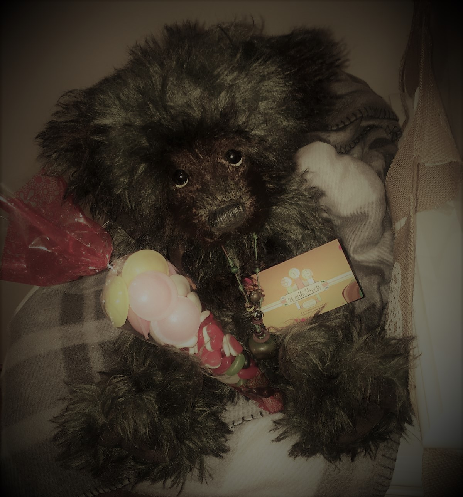

'We aren't just quite sure about this one'
Jason, the oldest and supposedly the wisest, runs the whole operation from his house with his trusty sidekick Dusty Jack. Although we still can't be sure who really is the smarter one, him or the bear....
Jason, the oldest and supposedly the wisest, runs the whole operation from his house with his trusty sidekick Dusty Jack. Although we still can't be sure who really is the smarter one, him or the bear....

'Mirror, Mirror, On The Wall, Who Is The Fairest Of Them All'
The mascot of the family, Wee Jack, is always there to cheer the kids up.
WARNING: DO NOT FEED AFTER MIDNIGHT!
The mascot of the family, Wee Jack, is always there to cheer the kids up.
WARNING: DO NOT FEED AFTER MIDNIGHT!